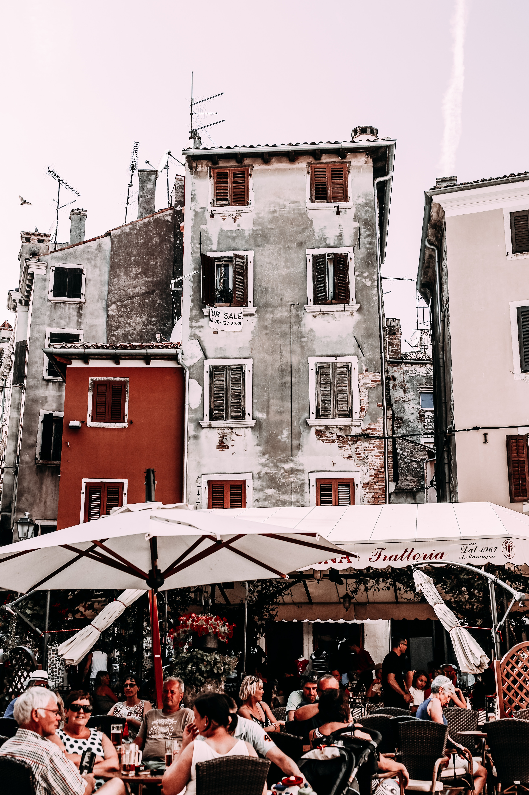
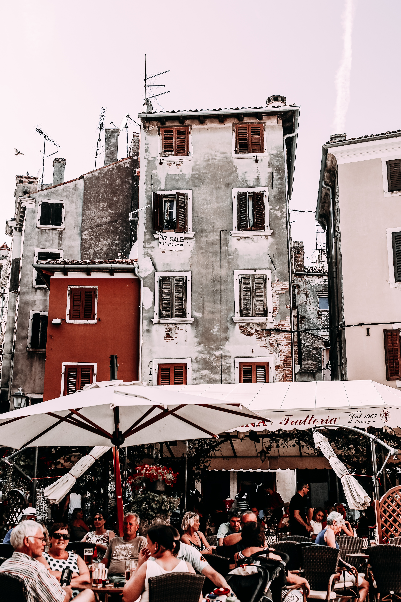

1938-1956
Los Años de la Postguerra
En estos años difíciles, Restaurante Mondariz se convirtió en un refugio de esperanza y sabor. Superamos la escasez con creatividad culinaria y fuimos testigos del renacer de la alegría y la unidad en cada plato servido. La paella se volvió símbolo de resistencia y nuestras puertas, un umbral a la reconstrucción de la vida madrileña.
1956-1978
Tiempo de Cambios y Movida
Esta época vio a Restaurante Mondariz transformarse con la corriente cultural del país. Sevilla vibraba al ritmo del flamenco y nosotros, al calor de la movida, reinventamos nuestras recetas. Las tapas ganaron fama, la música llenaba cada rincón y cada noche se tejía una historia nueva en el tapeo y el baile.
1978-1997
Era de Prosperidad y Innovación
Barcelona acogió a Restaurante Mondariz en un periodo de renovación y progreso. La exploración y experimentación en la cocina se volvieron nuestro lema. Descubrimos nuevas combinaciones en maridajes de vinos y platos, celebrando la diversidad y riqueza del patrimonio culinario español.
1997-2023
Siglo XXI: Tradición y Modernidad
En Valencia, Restaurante Mondariz abrazó el nuevo milenio con una fusión de lo tradicional y lo moderno. Los quesos españoles se redescubrieron con un toque contemporáneo, y cada evento se convirtió en una experiencia única. Nos hemos consolidado como un emblema de la gastronomía española, respetando nuestras raíces y mirando hacia el futuro.


 
